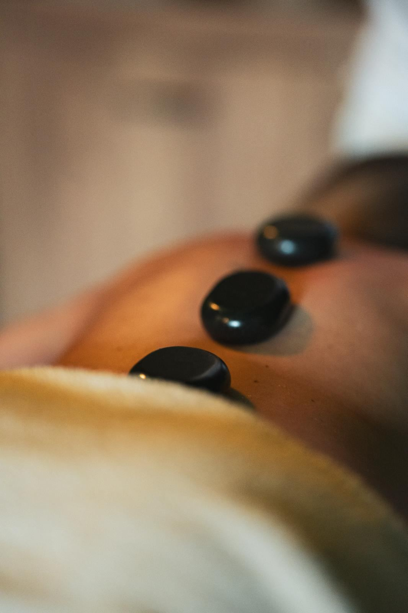
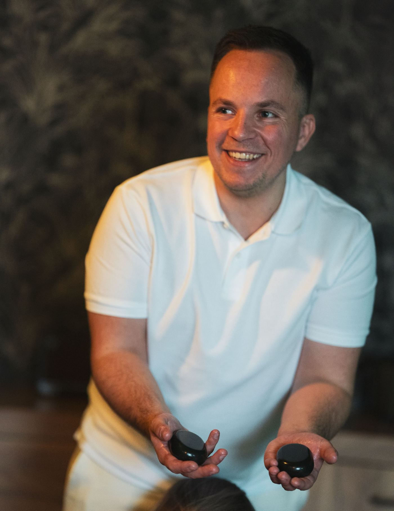

03Teplo
Masáž lávovými kameny v Brně
Teplo, které jde hloub než ruce. Nahřáté kameny prohřejí záda dřív, než se do nich pustím — a sval, který je teplý, povolí mnohem ochotněji.
- Délka
- 60 / 90 min
- Cena
- od 1 190 Kč
- Tlak
- střední, nastavíme
- Nejlépe na
- ztuhlá zádaa zimomřivé dny

Kdy po kamenech sáhnout
Lávové kameny nejsou jen hezčí verze klasické masáže. Mají smysl tam, kde ruce samotné narážejí.
Záda jsou ztuhlá jako prkno
U klasické masáže by první půlhodina padla jen na rozehřátí. Kameny ji zkrátí — teplo povolí povrchové napětí a ruce se pak dostanou hlouběji.
Silný tlak nesneseš, ale chceš do hloubky
Teplo udělá část práce místo tlaku. Masáž může zůstat příjemná a přesto zabrat.
Je ti pořád zima
V zimě nebo po dni v klimatizované kanceláři tě kameny prohřejí skrz — to se rukama udělat nedá.
Potřebuješ vypnout hlavu
Těžké teplé kameny podél páteře zpomalí dech skoro samy. Kdo u masáže obvykle přemýšlí, tady většinou přestane.
Hodina, kterou udělá teplo
- 01
Krátký rozhovor
Kde to drží, co tě bolí a jak snášíš teplo. Podle toho nastavím kameny i tlak.
- 02
Rozehřátí
Začínám rukama a teplým olejem. Kameny se mezitím nahřívají ve vodní lázni.
- 03
Kameny
Teplé kameny položím podél páteře a masíruju jimi záda, šíji i nohy. Teplotu kdykoli ubereme.
- 04
Dojezd
Klidné dokončení rukama, chvíle ležení a čaj. Ze studia se nikam nespěchá.
Záda, šíje a nohy. Dost na to, aby se tělo prohřálo a povolilo.
Rezervovat 60 minutCelé tělo a delší ležení s kameny. Pro ty, kdo chtějí opravdu vypnout.
Rezervovat 90 minutHotově, převodem, Edenred i Benefit plus Zrušení zdarma do 24 hodin Jde darovat jako dárkový poukaz
Kdy raději ne — nebo se nejdřív ozvi
- horečka nebo akutní infekce, první trimestr těhotenství
- čerstvý úraz, operace nebo zánět v místě, kde by ležely kameny
- křečové žíly, kožní onemocnění, onkologická léčba, léky na ředění krve
Nejsem lékař a masáž není léčba. Když si nejsi jistý, napiš mi a řeknu rovnou, jestli má smysl přijít. Celé znění v obchodních podmínkách.

Kdo masíruje
Kameny ti na záda pokládám vždycky já
Jmenuju se Lukáš Václavek a ve studiu u Lidické masíruju sám. Žádné střídání masérů — kdo tě masíroval minule, ví, co tě bolelo, a teplotu kamenů si pamatuje taky.
[DOPLNIT: kurz masáže lávovými kameny — kde a kdy]
„Masáž, co vás odvane do úplně jiného vesmíru — bez napětí, bez stresu, do naprostého uvolnění a myšlenkového vakua.“
Reservio Karin · 26. 8. 2026
Nepálí kameny?
Nemají. Mají příjemně hřát. Než kámen položím na kůži, vyzkouším ho, a když je ti teplo moc, stačí říct a uberu.
Je masáž s kameny silná?
Spíš ne. Teplo udělá část práce, takže tlak může zůstat příjemný. Sílu ladíme na začátku stejně jako u každé masáže.
60, nebo 90 minut?
Hodina stačí na záda, šíji a nohy. Za devadesát minut je čas na celé tělo a delší ležení s kameny.
Můžu zaplatit benefity?
Ano. Přijímám Edenred a Benefit plus. Stačí to zmínit při rezervaci, platí se až na místě.
Dá se masáž darovat?
Ano, dělám dárkové poukazy s platností šest měsíců. Napiš mi nebo zavolej a domluvíme se.
Termín na pár kliknutí
V Reserviu vyber Lávové kameny, den a čas. Potvrzení přijde e-mailem.
- Adresa
- Skřivanova 335/5, 602 00 Brno
kousek od Lidické, pár minut od Lužánek - Otevřeno
- Po–St 12:00–22:00
Čt 9:00–19:00
Pá 9:00–18:00 - info@uvolnitomasaze.cz